16
高级助推算法
在这一章中，我们将讨论一些重要的算法，这些算法利用不同的估计量来提高集合或委员会的整体性能。这些技术要么通过在属于预定义集合的每个估计器中引入中等水平的随机性来工作，要么通过创建一系列估计器来工作，在这些估计器中，每个新模型都被强制提高先前模型的性能。这些技术允许我们在使用容量有限或更倾向于过度拟合训练集的模型时，减少偏差和方差(从而提高验证准确性)。
特别是，本章涵盖的主题如下:
- 梯度推进
- 投票分类器、堆叠和分桶的集合
我们现在可以开始探索与梯度推进相关的主要概念，梯度推进是一个非常灵活的模型，它利用了更简单算法的简单性(如决策树)和良好调整的集成的力量。
梯度推进
在这一点上，我们可以介绍一种更通用的创建增强合奏的方法。让我们选择一个通用算法系列，表示如下:
使用矢量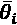对每个模型进行参数化，并且对所采用的方法种类没有限制。在这种情况下，我们将考虑决策树(当采用这种提升策略时，这是最广泛的算法之一，在这种情况下，该算法被称为梯度树提升)，但该理论是通用的，可以很容易地应用于更复杂的模型，如神经网络。在决策树中，参数向量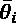由选择元组组成，因此读者可以将这种方法视为伪随机森林，在这里，我们利用先前的经验寻找额外的最优性，而不是随机性。事实上，与 AdaBoost 一样，梯度增强系综是使用正式定义为正向逐级加法建模的技术顺序构建的。得到的估计值表示为加权和:
因此，要管理的变量是单个估计器权重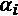和参数向量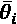。术语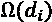是一个正则化/惩罚因子，并不总是被执行。在最初的表述中，这个元素是不存在的，但是它已经被引入，例如，在 XGBoost 框架中。一般来说，可能的罚函数有 L 1 (实现更稀疏)和 L 2 (防止过拟合)。特别是，当估计器的数量增加时，后者可能非常有用，因为，例如，即使单个决策树具有有限的最大深度，集成也可能导致过度拟合。我邀请读者经常检查机器学习框架是否支持正则化，并使用不同的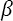值来评估性能。但是，从现在开始，我们将这个术语从解释中排除，因为它的作用很简单，不会改变问题的结构(排除额外的复杂性)。
在训练过程中，我们不必使用整个集合，而是使用单个元组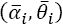，而无需修改在之前的迭代中已经选择的值。一般程序可以用一个循环来概括:
- 估计量总和被初始化为空值。
- 对于 i = 1 到NT25】c:
- 选择最佳元组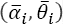并训练估计器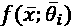。
 。
。
- 最终估计器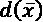被输出。
怎么可能找出最佳元组？我们已经提出了一个通过增加数据集来提高每个学习者的表现的策略。相反，在这种情况下，算法基于我们需要最小化的成本函数:
由于该过程是连续的，每个估计器都被优化以提高前一个估计器的精度。然而，与 AdaBoost 相反，我们并不局限于施加特定的损失函数(有可能证明 AdaBoost。M1 等价于这种算法，但其证明超出了本书的范围。正如我们将要讨论的，其他成本函数可以在几种不同的情况下产生更好的性能，因为它们避免了过早收敛到次优最小值。
通过使用先前的公式来优化每个新学习者，可以认为问题已经解决；然而，argmin x 函数需要对成本函数空间进行完整的探索，并且由于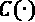依赖于每个特定的模型实例，因此，依赖于，为了找到最优解，有必要执行几次再训练过程。而且问题一般是非凸的，变量个数可以很大。诸如 L-BFGS 或其他拟牛顿法的数值算法需要太多的迭代和令人望而却步的计算时间。很明显，这种方法在绝大多数情况下是负担不起的，梯度推进算法已经被提议作为中间解决方案。其思想是用梯度下降策略找到一个次优解，该策略限制在每次迭代的一个步骤中。
为了呈现算法，用对最优目标的明确引用来重写加法模型是有用的:
注意，成本函数是在所有先前训练的模型上计算的；因此，校正总是递增的。如果成本函数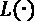是可微的(这是一个不难满足的基本条件)，则可以计算相对于当前加性模型的梯度(在第IT8】次迭代中，我们需要考虑将所有先前的I–1 模型相加得到的加性模型):
此时，可以通过将当前的加法模型移动到梯度的负方向来添加新的分类器:
我们还没有考虑参数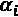(也没有考虑学习率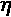，它是一个常数)。然而，熟悉一些基本微积分的读者可以立即理解，更新的效果是通过迫使下一个模型提高其相对于其前身的准确性来降低全局损失函数的值。然而，一个单一的梯度步骤不足以保证一个合适的推进策略。事实上，如前所述，我们还需要根据每个分类器减少损失的能力对其进行加权。一旦计算出梯度，就可以通过直接最小化损失函数(使用线搜索算法)来确定权重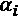的最佳值，该损失函数是考虑到当前的加法模型(将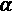作为额外变量)而计算的:
当使用梯度树提升变体时，可以通过将权重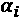分成与树的每个终端节点相关联的 m 个子权重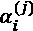来实现改进。计算复杂度略有增加，但最终精度可以高于用单一权重获得的精度。原因源于树的功能结构。由于增强迫使在特定区域中专门化，所以当特定数据点不能被正确分类时，单个权重也可能导致对学习者的过高估计。
相反，使用不同的权重，可以对结果进行细粒度的过滤，根据结果的值和特定树的属性接受或丢弃结果。
这种解决方案不能提供完全优化的相同精度，但它相当快，并且可以使用更多的估计器和更低的学习速率来补偿这种损失。像许多其他算法一样，梯度增强必须进行调整，以便在低方差的情况下产生最大的精度。学习率通常远小于 1.0，其值应通过验证结果并考虑估计器的总数来确定(当使用更多的学习者时，最好降低学习率)。此外，可以添加正则化技术以防止过拟合。当使用特定的分类器家族(如逻辑回归或神经网络)时，很容易包含一个 L 1 或 L 2 惩罚，但对于其他估计器就不那么容易了。为此，一种常见的正则化技术(也由 scikit-learn 实现)是训练数据集的下采样。选择 P < N 随机数据点允许估计器减少方差并防止过度拟合。
或者，可以像在随机森林中一样采用随机特征选择(仅用于梯度树提升)；选取特征总数的一小部分会增加不确定性，并避免过度专门化。当然，这些技术的主要缺点是精度损失(与下采样/特征选择比成比例),为了找到最合适的折衷，必须对精度进行分析。
梯度增强的损失函数
在进入下一节之前，简要讨论一下这种算法通常采用的主要损失/成本函数是有用的。在第一章中，我们介绍了一些常见的成本函数，如均方误差、Huber 损失(在回归环境中非常稳健)和交叉熵。它们都是有效的例子，但是还有其他函数是分类问题特有的。第一种是指数损失，定义如下:
正如 Hastie、Tibshirani 和 Friedman 所指出的，该函数将梯度增强转换为 AdaBoost。M1 算法。相应的成本函数具有非常精确的行为，有时对于解决特定的问题并不是最合适的。事实上，当误差较大时，指数损失的结果具有非常高的影响，产生在几个点附近强烈达到峰值的分布。
随后的分类器可能因此被驱使过度专门化它们的结构以仅处理小的数据区域，具有丧失正确分类其他点的能力的具体风险。在许多情况下，这种行为并不危险，最终的偏差-方差权衡是绝对合理的；然而，存在这样的问题，其中更软的损失函数可以允许更好的最终精度和泛化能力。实值二进制分类问题最常见的选择是二项式负对数似然损失(偏差)，定义如下(在这种情况下，我们假设分类器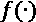没有阈值，但输出正类概率):
此损失函数与逻辑回归中使用的相同，并且与指数损失不同，不会产生峰值分布。具有不同概率的两个误分类的点与误差(不是指数值)成比例地增加，以便迫使分类器聚焦于具有几乎相同概率的所有误分类的群体(当然，分配给误差非常大的点的较高概率是期望的，假设所有其他误分类的点总是有很好的机会被选择)。二项负对数似然损失对多类问题的自然延伸是多项负对数似然损失，定义如下(分类器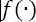表示为具有 p 分量的概率向量):
在前面的公式中，符号IT6】y = j 必须解释为指示函数，当 y = j 时等于 1，否则等于 0。这种损失函数的行为完全类似于二项式变量，一般来说，这是分类问题的默认选择。请读者测试带有指数损失和偏差的例子，并比较结果。在展示完整的算法之前，考虑成本函数的更完整版本是有帮助的，包括正则化项:
函数 没有特别的限制。不过一般来说，不是方形LT13】2 定额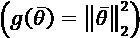，就是LT18】1 定额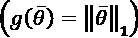。常数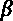控制正则化的强度。
没有特别的限制。不过一般来说，不是方形LT13】2 定额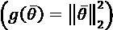，就是LT18】1 定额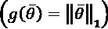。常数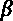控制正则化的强度。
考虑到这些模型的性质，它们具有非常大的容量并且可能很容易过度拟合，在例如决策树的最大深度和LT26】2 正则化之间进行权衡评估总是一个好主意。事实上，虽然前者激励偏差的减少(有时方差急剧增加)，后者却有相反的效果，保证了合理的泛化能力。 L 1 范数主要用于引入稀疏性，但在梯度增强的情况下用处不大，因为即使许多参数变为零，集合也总是使用它们来进行操作。
完整的梯度提升算法如下:
- 设置估计器的族和数量NT34】c。
- 选择一个损失函数 L (例如，偏差)。
- 选择正则化策略和参数的值。
- 将基本估计值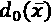初始化为常数(如 0)或使用另一个模型。
- 设置学习率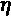(例如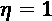)。
使用 scikit-learn 提升梯度树的示例
在这个例子中，我们想要使用一个梯度树提升分类器(类GradientBoostingClassifier)并检查最大树深度(参数max_depth)对性能的影响。考虑前面的例子，我们从设置n_estimators=50和learning_rate=0.8开始:
import numpy as np
import joblib
from sklearn.ensemble import GradientBoostingClassifier
from sklearn.model_selection import cross_val_score
scores_md = []
eta = 0.8
for md in range(2, 13):
gbc = GradientBoostingClassifier(n_estimators=50,
learning_rate=eta,
max_depth=md,
random_state=1000)
scores_md.append(np.mean(
cross_val_score(gbc, X, Y,
n_jobs=joblib.cpu_count(), cv=10)))
结果如下图所示:
作为最大树深度函数的 10 倍交叉验证准确度
正如在第一部分中所解释的，决策树的最大深度与特征之间交互的可能性严格相关。当树在系综中使用时，这可能是一个积极或消极的方面。非常高的相互作用水平可以创建过于复杂的分离超平面，并降低总体方差。在其他情况下，有限的相互作用会导致更高的偏差。
利用这个特定(且简单)的数据集，当最大深度为 2 时(考虑到根的深度等于 0 ),梯度提升算法可以实现更好的性能，这一点通过特征重要性分析和维度缩减得到了部分证实。
在许多实际情况下，这种研究的结果可能完全不同，性能会有所提高。因此，我建议您交叉验证结果(最好采用网格搜索),从最小深度开始增加值，直到达到最大精度。对于max_depth=2，我们现在想要调整学习速率，这是该算法中的一个基本参数:
import numpy as np
scores_eta = []
for eta in np.linspace(0.01, 1.0, 100):
gbr = GradientBoostingClassifier(n_estimators=50,
learning_rate=eta,
max_depth=2,
random_state=1000)
scores_eta.append(
np.mean(cross_val_score(gbr, X, Y,
n_jobs=-1, cv=10)))
相应的曲线如下图所示:
作为学习率函数的 10 倍交叉验证准确度(最大深度等于 2)
不出所料，梯度树提升在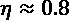方面优于 AdaBoost，实现了略低于 0.99 的的交叉验证精度。这个例子非常简单，但是它清楚地显示了这种技术的威力。主要缺点是复杂。
与单一模型相反，集成对超参数的变化更敏感，必须进行更详细的研究以优化模型。当数据集不是非常大时，交叉验证仍然是最好的选择。相反，如果我们非常确定数据集几乎完美地代表了底层的数据生成过程，那么可以对其进行洗牌，将其分成两个(训练/测试)或三个块(训练/测试/验证),然后通过优化超参数并尝试使测试集过拟合;这个表达式可能看起来很奇怪，但是过拟合测试集意味着在完美学习训练集结构的同时最大化泛化能力。
使用 XGBoost 进行梯度增强的示例
XGBoost(https://xgboost.readthedocs.io/en/latest)是一个流行的分布式框架，用于建模和训练梯度推进算法。它被设计得非常快(后端是用 C++编写的)，并且可以使用大多数分布式基础设施(例如 Yarn 或 Dask)进行并行化。此外，它提供了不同语言的接口，并且不仅可以通过梯度增强的实现，还可以通过并行随机森林和 AdaBoost 模型的实现来帮助解决极其庞大的数据集问题。该框架相当复杂，需要专门的资源来分析其所有功能(两个很好的起点是官方文档和视频课程Starttech Educational Services LLP、决策树、Random Forests、AdaBoost 和 XGBoost in Python ，Packt Publishing，2019)。在这种情况下，我们更感兴趣的是展示如何使用 XGBoost 训练梯度增强模型，以及如何评估特征重要性以增加模型的可解释性。因为我们已经熟悉了它，所以我们继续使用葡萄酒数据集，但是，在这种情况下，我们的分析会更深入一点。
作为第一步，我们需要加载数据集，并且为了方便起见，将它分成训练集和测试集(样本大小的 15%):
from sklearn.datasets import load_wine
from sklearn.model_selection import train_test_split
wine = load_wine()
X, Y = wine["data"], wine["target"]
X_train, X_test, Y_train, Y_test = \
train_test_split(X, Y,
test_size=0.15,
random_state=1000)
此时，我们需要准备一种称为 DMatrix 的格式的数据，这种格式与 XGBoost 兼容。幸运的是，该框架允许我们加载几乎任何类型的数据结构。因此，我们只需要实例化这些类:
import xgboost as xgb
dall = xgb.DMatrix(X, label=Y,
feature_names=wine['feature_names'])
dtrain = xgb.DMatrix(X_train, label=Y_train,
feature_names=wine['feature_names'])
dtest = xgb.DMatrix(X_test, label=Y_test,
feature_names=wine['feature_names'])
数据矩阵的一些主要优点是，它们可以被并行化，并对所有必要的数据信息进行编码(类似于 pandas 数据帧)。
Wine 数据集是多类的(有 3 个类)；因此，我们不能对输出使用二进制表示。XGBoost 为多类问题提供了两个有效的选择:Softmax 和 Softprob。我们采用的是后者，通常被称为 Softmax。实际上，输出将是一个概率向量yT19】I=(p(c= 1)、 p ( c = 2)、… p ( c = m)，其中每项p(c=I【T38 这种方法在深度学习中非常有帮助，并且还能够分析边界情况(例如，给定三个类，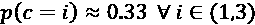)。考虑到我们正在处理概率，损失函数可以采用对数损失，对于等于 N 和Ny 类的样本量，其定义为:
在前面的公式中，如果点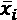与第jT5 第标签相关联，则为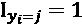，否则为 0。当然， L log 必须最小化，因为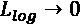如果所有样本都具有与其实际类别相关联的概率 1。为了开始执行初始 CV，我们需要准备一个参数字典:
import joblib
params = {
'n_estimators': 50,
'max_depth': 2,
'eta': 1.0,
'objective': 'multi:softprob',
'eval_metric': 'mlogloss',
'num_class': 3,
'lambda': 1.0,
'seed': 1000,
'nthread': joblib.cpu_count(),
}
树的最大深度(NT14】c= 50)已被设置为 2，以避免过度拟合。学习率已被设置为 1.0，控制LT20】2 正则化的参数 已被保持为其默认值(1.0)。这个选择是在简单的网格搜索之后做出的，但是我邀请读者使用 XGClassifier 类重新实现这个练习，它与 scikit-learn 兼容，并且可以使用 GridSearchCV 进行分析。重复这一点总是很重要的，当处理小数据集时，这种大容量的模型很容易溢出。这种行为是矛盾的，因为验证的准确性可能比简单的线性模型要低。使用 L 2 正则化可以防止模型(或者至少减轻这种趋势)过度学习训练集，因此它的使用总是一个需要考虑的因素。
已被保持为其默认值(1.0)。这个选择是在简单的网格搜索之后做出的，但是我邀请读者使用 XGClassifier 类重新实现这个练习，它与 scikit-learn 兼容，并且可以使用 GridSearchCV 进行分析。重复这一点总是很重要的，当处理小数据集时，这种大容量的模型很容易溢出。这种行为是矛盾的，因为验证的准确性可能比简单的线性模型要低。使用 L 2 正则化可以防止模型(或者至少减轻这种趋势)过度学习训练集，因此它的使用总是一个需要考虑的因素。
此时，我们可以执行 10 倍的 CV:
nb_rounds = 20
cv_model = xgb.cv(params, dall,
nb_rounds,
nfold=10,
seed=1000)
print(cv_model.describe())
输出变量cv_model是一个 pandas 数据帧，包含使用所有折叠计算的训练/测试平均值和标准偏差。下图显示了一个漂亮的打印结果:
CV 统计汇总
因为我们已经执行了 20 轮(迭代)，所以在每轮之后收集统计数据。最小的平均测试测井损失约为，这对于该任务是合理的。如果需要更好的性能，可以尝试增加估计器的数量、轮数、最大深度、和正则项。
现在，让我们尝试训练分类器，并使用之前准备的测试集对其进行测试:
evals = [(dtest, 'test'), (dtrain, 'train')]
model = xgb.train(params, dtrain,
nb_rounds, evals)
前面代码片段的输出是:
[0] test-mlogloss:0.458516 train-mlogloss:0.278145 [1] test-mlogloss:0.287964 train-mlogloss:0.113728 … [18] test-mlogloss:0.137905 train-mlogloss:0.00886 [19] test-mlogloss:0.137903 train-mlogloss:0.00886
分类器几乎是过度拟合的，但是，由于测试对数损失有一个小的下降，而训练对数损失是恒定的，我们可以接受这个结果。此外，最终的测试对数损失与 CV 分数一致(即使它在尾部的较高部分)。在现实生活中，较大的训练集可能是最佳选择(如果可行)，但在我们的情况下，我们没有这种可能性。另一方面，CV 分数基于 18 个测试样本(，而 178 的 15%约为 27。因此，我们用更少的数据点进行训练，测试也相应更差。读者可以更改这个值(例如，10%)，注意不要过多地减少测试大小，因为样本大小已经很小(178)，很容易使分类器过满。
现在让我们来测试这个模型:
from sklearn.metrics import confusion_matrix
Y_pred = model.predict(dtest)
print(confusion_matrix(Y_test,
np.argmax(Y_pred, axis=1)))
前面包含混淆矩阵的代码片段的输出是:
[[ 6 0 0] [ 0 13 1] [ 0 0 7]]
因此，只有一个错误分类，对应于大约 96%的准确度。该值与我们之前的结果一致，但由于从训练样本中排除了数据区域，因此该值存在常见现象。考虑到 CV 分数，这个测试集对应于最差的情况之一，如果由于样本大小，错误分类的数量总是非常小。在下一个例子中，我们将看到一个简单的技巧是如何解决这个问题的(给定这个数据集的性质)。现在，我们可以认为这个结果是可以接受的，但是警告读者不要立即放弃，也不要接受一个验证结果作为一个不可变的值。最佳超参数配置的网格搜索在大多数情况下仍然是最佳选择(可能包括一些关于最合适搜索区域的先验知识——例如，评估太小或太大的学习率通常没有意义)。
评估特征的预测能力
由于基本的估计器是决策树，我们可以要求 XGBoost 输出特性重要性，但是在这种情况下，我们想要使用一个更有趣的解决方案，叫做 SHAP(https://github.com/slundberg/shap)，这是一个非常有前途的 XAI 方法。Lundberg S. M .，Lee S .，在 NIPS，2017 年的《解释模型预测的统一方法，神经信息处理系统的进展》30 中讨论了这个想法，它基于一个创建可解释模型的通用策略。如前所述，当模型具有形式y=ax1+bx2+…+k并且变量被标准化时，系数与每个特定特征的预测能力成正比。不幸的是，只有少数模型如此简单，但是使用加法方法找到一个模型的近似值是可能的:
模型扮演解释者的角色，它通常采用一些限制样本空间的技术来构建，以避免复杂性爆炸。由于我们将在其他许多时候使用这种方法，我们现在可以限制我们的讨论，说选择系数是为了利用博弈论结果(它们根据其创建者被称为 Shapley 值),这允许我们了解当在特定特征上调节时，预测会受到多大影响。以一种非常简化的方式，我们可以假设一个具有 N 个特征的函数的值在范围( a ， b )内。如果我们对参数一无所知，我们只能平均函数(最大不确定度)。当添加一些特性时，期望值可以根据对这些变量的了解。
这一过程(以相加的方式)提高了预测的准确性，直到我们达到一个不需要任何平均的点值(因为这些特征使所有自由度饱和)。这样，当一个特征被添加到模型中时，它的贡献可以从两个角度进行评估:
- 符号，决定影响的方向(朝向真实值或相反方向)
- 量级，根据重要性提供基本内容(量级越大，特征越重要)
为了更好地理解(即使没有所有细节)这个过程，让我们使用 SHAP(可使用标准命令pip install shap安装)来计算与我们的 XGBoost 模型相关的特性重要性总结:
import shap xg_explainer = shap.TreeExplainer(model) shap_values = xg_explainer.shap_values(X)
第一个命令实例化一个解释器(创建解释模型的结构)，而第二个命令通过寻找系数(SHAP 值)来拟合解释模型。汇总的输出如下图所示:
XGBoost 模型的 SHAP 摘要
这些特征按降序排列，发现其他算法产生的顺序几乎相同也就不足为奇了。主要的区别是，现在我们有了一个关于三个类别的特征预测能力的度量。例如，黄酮类化合物对选择/拒绝类别 2 有非常强的贡献，而颜色强度对类别 1 起主导作用。考虑到前三个属性，我们对每一个预测几乎都有一个完整的解释。事实上，例如，当产量为0 类时，最强的贡献来自脯氨酸(灰分和总酚的碱度提供了次要贡献)。
在这种情况下，很容易确定类别 0 的脯氨酸平均值大约是其他两个类别(具有相似的标准偏差)的两倍，脯氨酸含量最小的类别为 1(这证明了对预测的边际贡献)。领域专家可能会立即识别出这种模式，但是当模型(和数据集)更加复杂时，可解释性对于理解导致预测的过程变得至关重要。在这个例子中，我们没有明确地讨论特性之间的依赖关系，假设它被编码在树结构中。然而，有 SHAP 解释器实例和特定的超参数，允许假设独立的特征或模拟更复杂的场景(如深度神经网络)。在接下来的几章中，我们将展示其他有趣的特性。
投票分类器的集合
一种更简单但同样有效的创建集合的方法是基于利用有限数量的强学习者的想法，这些强学习者的特性允许他们在样本空间的特定区域产生更好的表现。让我们开始考虑一组NT7】c 离散值分类器。算法不同，但都是用相同的数据集训练，输出相同的标签集。最简单的策略是基于硬投票的方法:
在这种情况下，函数 计算输出标签yI 的估计器的数量。这种方法在许多情况下非常有效，但是有一些限制。如果我们只依赖多数票，我们就隐含地假设一个正确的分类是由大量的估计量得到的。即使，投票是输出一个结果所必需的，在很多情况下，它们的数量要高得多。此外，当 k 不是很大时，投票也意味着涉及大部分人口的对称性。这种情况经常导致无用模型的训练，这些模型可以简单地被一个合适的强学习者所取代。
计算输出标签yI 的估计器的数量。这种方法在许多情况下非常有效，但是有一些限制。如果我们只依赖多数票，我们就隐含地假设一个正确的分类是由大量的估计量得到的。即使，投票是输出一个结果所必需的，在很多情况下，它们的数量要高得多。此外，当 k 不是很大时，投票也意味着涉及大部分人口的对称性。这种情况经常导致无用模型的训练，这些模型可以简单地被一个合适的强学习者所取代。
事实上，让我们假设集成由三个分类器组成，并且其中一个分类器在其他两个分类器容易被误分类的区域中更专业。应用于该集成的硬投票策略可以持续地惩罚更复杂的估计器而有利于其他分类器。通过考虑实值结果可以获得更精确的解。如果每个估计器输出一个概率向量，决策的置信度隐含地编码在值中。例如，输出为(0.52，0.48)的二元分类器比另一个输出为(0.95，0.05)的分类器更不确定。应用阈值相当于平坦化概率向量并丢弃不确定性。
让我们考虑具有三个分类器和一个难以分类的数据点的集成，因为它非常接近分离超平面。硬投票策略决定第一类，因为阈值输出是(1，1，2)。然后，我们检查输出概率，得到(0.51，0.49)，(0.52，0.48)，(0.1，0.9)。在平均概率之后，集合输出变成大约(0.38，0.62)，并且通过应用 argmax x ，我们得到第二类作为最终决策。一般来说，考虑加权平均值也是一个很好的做法，这样最终的类可以如下获得(假设分类器的输出是一个概率向量):
如果不需要加权，权重可以简单地等于 1.0，或者它们可以反映我们对每个分类器的信任程度。一个重要的规则是避免在大多数情况下分类器占主导地位，因为这将是一个单一估计场景的隐式后退。一个好的投票例子应该总是允许少数人在他们的信心比多数人高的时候推翻一个结果。在这些策略中，权重可以被视为超参数，并使用交叉验证的网格搜索进行调整。然而，与其他集成方法相反，它们不是细粒度的。因此，最佳值通常是一些不同可能性之间的折衷。
一种稍微复杂一点的技术叫做堆叠，包括使用额外的分类器作为后过滤步骤。经典方法包括分别训练分类器，然后将整个数据集转换为预测集(基于类别标签或概率)，并训练组合分类器以将预测与最终类别相关联。即使使用非常简单的模型，如逻辑回归或感知器，也有可能将预测值混合起来，从而实现作为输入值函数的动态重新加权。
只有当单个训练策略可以用于训练整个系综(包括组合器)时，更复杂的方法才是可行的。例如，它可以与神经网络一起使用，然而，神经网络已经具有隐含的灵活性，并且通常可以比复杂的集成执行得更好。
使用 scikit-learn 的投票分类器示例
在本例中，我们将再次使用葡萄酒数据集。由于这个概念非常简单，我们的目标是展示如何组合两个完全不同的估计量来提高整体交叉验证的准确性。为此，我们选择了逻辑回归和非线性分类器(RBF SVM)，它们在结构上是不同的。特别是，前者是线性模型，而后者是基于核的分类器，可以解决复杂的非线性问题。
我们采用这些算法的原因是，我们希望使用线性模型对大多数数据点进行正确分类，并利用 SVM 的非线性能力来降低与边界点相关的不确定性。正如已经指出的，这个数据集非常简单，与其他方法的复杂性相比，软投票分类器的准确性令人惊讶。
这个观察必须从两个相反的观点来考虑。第一个是关于示例中使用的数据集的复杂性(通常需要集成)。我们已经解释过，我们的目标是展示这些方法的有效性，而不是将它们应用到需要长时间训练的真实案例中。因此，先前获得的结果是绝对有效的，并且显示了这种模型如何能够克服更简单算法的限制。
另一方面，把这个例子看作奥卡姆剃刀原理的实际应用是有帮助的。有时，更复杂的模型似乎表现得更好，但对简单模型的轻微修改可以使它们更准确和更具成本效益。考虑到这是一本说教式的书，读者应该注意这种妥协，并了解什么时候花一些时间来优化更简单的模型而不是切换到更复杂(通常难以管理)的解决方案是有意义的。
像往常一样，练习的第一步是加载和规范化数据集:
import numpy as np from sklearn.datasets import load_wine from sklearn.preprocessing import StandardScaler wine = load_wine() X, Y = wine["data"], wine["target"] ss = StandardScaler() X = ss.fit_transform(X)
此时，我们需要分别评估两个估计器的性能:
from sklearn.linear_model import LogisticRegression
from sklearn.svm import SVC
svm = SVC(kernel='rbf',
gamma=0.01,
random_state=1000)
print('SCM score: {:.3f}'.format(
np.mean(cross_val_score(svm, X, Y,
n_jobs=-1, cv=10))))
lr = LogisticRegression(C=2.0,
max_iter=5000,
solver='lbfgs',
multi_class='auto',
random_state=1000)
print('Logistic Regression score: {:.3f}'.format(
np.mean(cross_val_score(lr, X, Y,
n_jobs=joblib.cpu_count(), cv=10))))
SVM score: 0.984 Logistic Regression score: 0.984
正如预期的那样，逻辑回归获得了与 SVM 相似的平均 CV 准确性(约 98.4%)。因此，考虑到分类器的不同性质，硬投票策略不是最佳选择。由于我们信任两个分类器，并且我们希望利用各自的特征，我们选择了一个权重向量设置为(0.5，0.5)的软投票。这样，没有一个分类器是占优势的，它们中的每一个对预测的贡献都是相等的。当然，我们期望 SVM 在逻辑回归的线性失去捕捉小偏差的能力的所有边界情况下是决定性的。
类VotingClassifier接受必须通过estimators参数提供的元组列表(估计器的名称，实例)。
可以使用参数投票(可以是“软”或“硬”)和可选权重，使用同名参数来指定策略:
from sklearn.ensemble import VotingClassifier
vc = VotingClassifier(estimators=[
('LR', LogisticRegression(C=2.0,
max_iter=5000,
solver='lbfgs',
multi_class='auto',
random_state=1000)),
('SVM', SVC(kernel='rbf',
gamma=0.01,
probability=True,
random_state=1000))],
voting='soft',
weights=(0.5, 0.5))
print('Voting classifier score: {:.3f}'.format(
np.mean(cross_val_score(vc, X, Y,
n_jobs=-1, cv=10))))
输出是:
Voting classifier score: 0.994
使用软投票策略，通过减少全局不确定性并达到约 99.4%的平均 CV 分数，所得估计值能够胜过逻辑回归和 SVM。事实上，葡萄酒数据集几乎是线性可分的，但有几个数据点位于一定总是被线性模型错误分类的区域中。RBF SVM 的存在使得这个限制能够被克服，并且当 sigmoid 值接近 0.5 时有助于逻辑回归。在这些情况下，SVM 的贡献足以推动输出高于或低于阈值，从而获得精确的最终分类。
作为进一步的练习，我邀请读者用其他数据集测试这个算法，使用更多的估计器，并尝试使用硬投票和软投票策略找出最佳组合。
集成学习作为模型选择
这不是一个合适的集成学习技术，但它有时被称为 bucketing。在前面的章节中，我们已经讨论了如何雇佣几个具有不同特点的优秀学习者来组成一个委员会。
然而，在许多情况下，单个学习者足以实现良好的偏差-方差权衡，但在整个机器学习算法群体中进行选择并不那么容易。由于这个原因，当一系列类似的问题必须解决时(它们可能不同，但最好考虑容易比较的场景)，可以创建一个包含几个模型的集合，并使用交叉验证来找到性能最好的模型。在过程的最后，将使用单个学习者，但是它的选择可以被认为是带有投票系统的网格搜索。
有时，即使使用相似的数据集，这种技术也可以揭示重要的差异。例如，在系统开发期间，提供第一数据集( X 1 ， Y 1 )。每个人都期望它是从底层数据生成过程pT12】数据中正确采样的，因此，拟合并评估了通用模型。让我们假设 SVM 达到了非常高的验证精度(使用 k 倍交叉验证进行评估),因此，它被选为最终模型。不幸的是，提供了第二个更大的数据集( X 2 ， Y 2 )，并且最终的平均精度恶化。我们可能会简单地认为模型的残差方差不能让它正确地概括，或者，正如有时发生的那样，我们可以说第二个数据集包含许多没有正确分类的异常值。
真实的情况稍微复杂一些:给定一个数据集，我们只能假设它代表一个完整的数据分布。即使当数据点的数量非常多或者我们使用数据扩充技术时，群体也可能不代表我们正在开发的系统将分析的一些特定点。分桶是创建安全缓冲区的好方法，只要场景发生变化，就可以利用这个安全缓冲区。该集成可以由完全不同的模型、属于同一族但参数化不同的模型(例如，不同的核支持向量机)或复合算法的混合(例如，PCA + SVM 和 PCA +决策树/随机森林)组成。最重要的元素是交叉验证。正如第一章中所解释的，只有当点的数量及其可变性足够高，足以证明它正确地代表了最终的数据分布时，将数据集分为训练集和测试集才是可接受的解决方案。这经常发生在深度学习中，其中数据集的维度非常大，计算复杂性不允许对模型进行太多次的重新训练。
相反，在经典的机器学习环境中，交叉验证是检查模型在用大型随机子集训练并在剩余子样本上测试时的行为的唯一方式。理想情况下，我们希望观察到相同的性能，但也可能发生这样的情况，在某些折叠中精度较高，而在其他折叠中精度则相当低。当观察到这种现象并且数据集是最终数据集时，这可能意味着模型无法管理样本空间的一个或多个区域，而增强方法可以显著提高最终精度。
总结
在这一章中，我们将集成学习的概念扩展到一个通用的前向逐级加法模型，其中每个新估计器的任务是最小化一个通用的成本函数。考虑到完全优化的复杂性，提出了一种梯度下降技术，该技术与估计量加权线搜索相结合，可以在分类和回归问题中产生优异的性能。
本章的剩余部分介绍了如何使用几个强学习者，平均他们的预测或考虑多数投票来建立集成。我们讨论了阈值分类器的主要缺点，并展示了如何建立一个软投票模型，它能够信任显示较少不确定性的估计器。其他有用的主题是堆叠方法，包括使用额外的分类器来处理集成中每个成员的预测，以及如何创建候选集成，使用交叉验证技术来评估候选集成，以找出每个特定问题的最佳估计量。
在下一章中，我们将开始讨论最重要的深度学习技术，介绍关于神经网络的基本概念以及它们训练过程中涉及的算法。
延伸阅读
- Alpaydin E .，机器学习介绍，麻省理工学院出版社，2010 年
- 随机森林，机器学习，45，2001
- Friedman J .、Hastie T .、Tibshirani R .、加法逻辑回归:助推的统计观点，统计年鉴，28/1998
- 朱，罗塞特，邹，哈斯蒂，多类 AdaBoost，统计及其推论，2009 年 2 月
- 德鲁克 h .，使用推进技术改进回归变量，ICML 1997 年
- Starttech 教育服务 LLP，决策树，随机森林，Python 中的 AdaBoost 和 XGBoost，Packt 出版，2019
- Lundberg S. M .，Lee S .，解释模型预测的统一方法，神经信息处理系统进展 30 ，NIPS，2017
- Bonaccorso G .，机器学习算法第二版，Packt 出版，2018